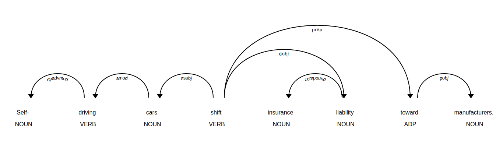

Python에서 Dependency Parsing
NLTK에서 Dependency Parsing
이전에 그래왔듯이, NLTK에서 먼저 시작해 봅시다.
우리가 할 작업은 Stanford Dependency Parser를 이용하는 방법을 알아보는 것입니다.
이 Parser는 Deprecated되었지만, 아직 사용할 수 있습니다.
파일은 https://nlp.stanford.edu/software/stanford-parser-4.0.0.zip에서 다운로드 받을 수 있습니다.
from nltk.parse.stanford import StanfordDependencyParser
path_to_jar = 'stanford-parser-4.0.0/stanford-parser.jar'
path_to_models_jar = 'stanford-parser-4.0.0/stanford-parser-4.0.0-models.jar'
dependency_parser = StanfordDependencyParser(path_to_jar=path_to_jar, path_to_models_jar=path_to_models_jar)
result = dependency_parser.raw_parse('I shot an elephant in my sleep')
dep = result.__next__()
print(list(dep.triples()))
결과는 다음과 같이 나옵니다.
[(('shot', 'VBD'), 'nsubj', ('I', 'PRP')), (('shot', 'VBD'), 'obj', ('elephant', 'NN')), (('elephant', 'NN'), 'det', ('an', 'DT')), (('shot', 'VBD'), 'obl', ('sleep', 'NN')), (('sleep', 'NN'), 'case', ('in', 'IN')), (('sleep', 'NN'), 'nmod:poss', ('my', 'PRP$'))]
shot이라는 verb가 tree의 root를 차지하는 것을 알 수 있습니다.
NLTK에서 간단하게 어떻게 이루어지는지 알아보았고, 이제는 spaCy로 넘어가겠습니다.
spaCy에서 Dependency Parsing
만약 모든 단원을 따라왔다면, 당신은 사실 dependency parsing을 여러 번 해봤을 것입니다.
Text를 nlp 돌리는 작업에 dependency parsing이 포함되어 있기 때문입니다.
다음 코드를 실행해 봅시다.
import spacy
nlp = spacy.load('en')
sent_0 = nlp('Myriam saw Clement with a telescope.')
sent_1 = nlp('Self-driving cars shift insurance liability toward manufacturers.')
sent_2 = nlp('I shot the elephant in my pyjamas.')
for chunk in sent_0.noun_chunks:
print((chunk.text, chunk.root.text, chunk.root.dep_, chunk.root.head.text))
결과는 다음과 같이 나올 것입니다.
('Myriam', 'Myriam', 'nsubj', 'saw')
('Clement', 'Clement', 'dobj', 'saw')
('a telescope', 'telescope', 'pobj', 'with')
이제 우리는 chunk와 root text, dependency type, head를 알 수 있습니다.
예상했듯, 동사 saw는 Myriam과 Clement의 head이고, Myriam은 주어, Clement는 목적어입니다.
다음 문장을 실행해 봅시다.
for chunk in sent_1.noun_chunks:
print((chunk.text, chunk.root.text, chunk.root.dep_, chunk.root.head.text))
결과는 다음과 같이 나옵니다.
('Self-driving cars', 'cars', 'nsubj', 'shift')
('insurance liability', 'liability', 'dobj', 'shift')
('manufacturers', 'manufacturers', 'pobj', 'toward')
3개의 명사구가 나옵니다.
Self-driving cars와 insuarce liability는 각각 root noun인 cars와 liability를 꾸미는 self-driving과 insurance로 이루어져 있습니다.
manufacturers는 toward의 목적어인 명사입니다.
마지막 문장을 실행해 봅시다.
for chunk in sent_2.noun_chunks:
print((chunk.text, chunk.root.text, chunk.root.dep_, chunk.root.head.text))
결과는 다음과 같습니다.
('I', 'I', 'nsubj', 'shot')
('the elephant', 'elephant', 'dobj', 'shot')
('my pyjamas', 'pyjamas', 'pobj', 'in')
the와 my는 elephant와 pyjamas를 꾸며주고, 명사구 안에 포함되어 있습니다.
이번에는 phrases보다는 individual words를 중심으로 보겠습니다.
for token in sent_0:
print((token.text, token.dep_, token.head.text, token.head.pos_, [child for child in token.children]))
위 코드의 결과는 다음과 같습니다.
('Myriam', 'nsubj', 'saw', 'VERB', [])
('saw', 'ROOT', 'saw', 'VERB', [Myriam, Clement, with, .])
('Clement', 'dobj', 'saw', 'VERB', [])
('with', 'prep', 'saw', 'VERB', [telescope])
('a', 'det', 'telescope', 'NOUN', [])
('telescope', 'pobj', 'with', 'ADP', [a])
('.', 'punct', 'saw', 'VERB', [])
다음 문장에서도 쉽게 결과를 확인해 볼 수 있습니다.
for token in sent_1:
print((token.text, token.dep_, token.head.text, token.head.pos_, [child for child in token.children]))
그 결과는 다음과 같습니다.
('Self', 'npadvmod', 'driving', 'VERB', [])
('-', 'punct', 'driving', 'VERB', [])
('driving', 'amod', 'cars', 'NOUN', [Self, -])
('cars', 'nsubj', 'shift', 'VERB', [driving])
('shift', 'ROOT', 'shift', 'VERB', [cars, liability, toward, .])
('insurance', 'compound', 'liability', 'NOUN', [])
('liability', 'dobj', 'shift', 'VERB', [insurance])
('toward', 'prep', 'shift', 'VERB', [manufacturers])
('manufacturers', 'pobj', 'toward', 'ADP', [])
('.', 'punct', 'shift', 'VERB', [])
이 결과에서도 root verb인 shift가 다양한 단어들과 연결되어 있음을 확인할 수 있습니다.
이를 displaCy로 확인해 보겠습니다.
spacy.displacy.serve(sent_1, style='dep')

한결 이해가 쉬울 겁니다.
Tree를 iterate해서 sentence의 head가 하나만 존재한다는 것을 보일 수 있습니다.
모든 가능한 주어들을 iterate해서 verb인 head를 추가해 보겠습니다.
from spacy.symbols import nsubj, VERB
verbs = set()
for possible_subject in sent_1:
if possible_subject.dep == nsubj and possible_subject.head.pos == VERB:
verbs.add(possible_subject.head)
print(verbs)
우리가 예상했던 대로 결과가 나오게 됩니다.
{shift}
다음 코드를 실행해 보십시오.
root = [token for token in sent_1 if token.head == token][0]
subject = list(root.lefts)[0]
for descendant in subject.subtree:
print((descendant.text, descendant.dep_, descendant.n_lefts,
descendant.n_rights, [ancestor.text for ancestor in descendant.ancestors]))
root를 token의 head가 자기 자신인지 체크해서 찾을 수 있습니다.
subject는 tree의 왼쪽에 있게 됩니다.
n_lefts는 왼쪽에 있는 자식들의 개수이고, n_rights는 오른쪽에 있는 자식들 개수입니다.
ancestors는 모든 조상 노드들을 가지고 있습니다.
이 코드 실행 결과는 다음과 같습니다.
('Self', 'npadvmod', 0, 0, ['driving', 'cars', 'shift'])
('-', 'punct', 0, 0, ['driving', 'cars', 'shift'])
('driving', 'amod', 2, 0, ['cars', 'shift'])
('cars', 'nsubj', 1, 0, ['shift'])